FOOD
아카라제
브라질 북동부 지방에서 간식으로 즐겨먹는 튀김요리이다. 주재료인 동부콩은 아프리카가 원산지로, 서아프리카인들이 브라질에 건너올 때 이 콩을 가져와 직접 재배하면서 음식문화도 함께 발전하였다. ‘아카라’는 나이지리아 요루바족 언어로 ‘불덩어리’라는 의미이며, ‘제’는 '먹다'라는 뜻을 가진다. 튀긴 새우와 오크라, 고추, 견과류로 만든 카루루(caruru) 소스를 발라 먹는다. 오늘날 대표적인 브라질 간식으로 길거리에서 흔히 찾아볼 수 있다. 동부콩을 주재료로 한 또 다른 음식인 아바라와 함께 칸돔블레에서 제례용 음식으로도 쓰인다. 동부콩은 단백질과 비타민 B1, B2, B6가 풍부하고, 항알러지와 항염작용에 도움을 준다.
Recipe
-
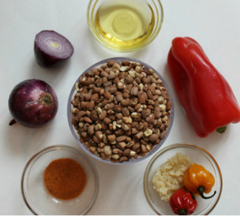
말린 콩 2컵
양파 1개와 1/2개1 1/2 onions
1 파프리카
1 하바네로 고추(선택사항)
맛소금을 준비한다. -
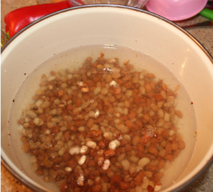
콩을 20분간 불린다
-
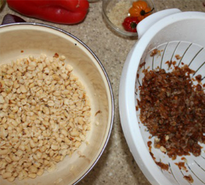
불린 콩의 껍질을 손으로 벗겨준다
-
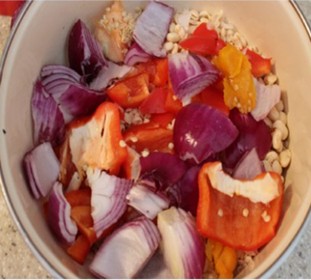
파프리카, 양파, 껍질 깐 콩을 한데 모으고 소금을 조금 넣는다
-
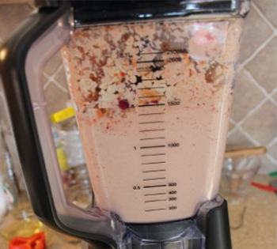
아주 조금 물을 첨가하고 믹서기로 1분간 갈아준다
-
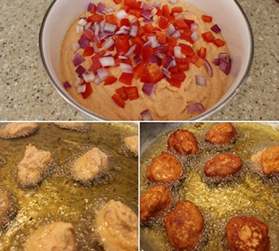
갈아준 반죽에 미리 썰어놓았던 양파와 파프리카를 넣어준 뒤 숟가락으로 덜어 기름에 튀긴다
-
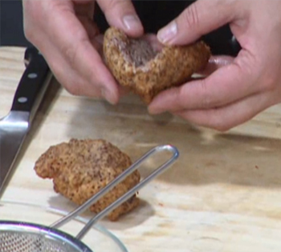
빵을 잘라 가운데 기호에 따라 새우와 각종 소스를 첨가한다
뻐웅 지 케이주
포르투갈 치즈 빵(Portuguese Bread of Cheese)이라는 뜻으로 브라질의 미나스 제라이스(Minas Gerais)주에서 노예들이 귀족 농장주에게 바쳤던 빵이다. 오늘날 타피오카(tapioca)라고 불리는 녹말 가루로 만든 빵이며 당시에는 치즈나 우유 모두 들어가지 않은 빵이었으나 이 빵이 브라질 전체로 퍼지고 귀족들이 더는 이런 타입의 빵을 먹지 않게 되면서 빵에 치즈와 우유를 넣어 만들게 되었다. 오늘날 미나스제라이스주의 모든 가정에서 신선한 커피와 함께 먹는다. 폴빌로(Polvilho)라고도 하는데 달콤한 것(sweet polvilho)과 새콤한 것(sour polvilho) 두 종류가 있다.
Recipe
-
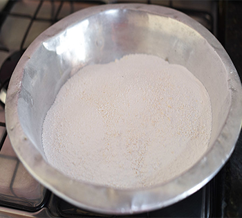
밀가루 500g, 물 1컵, 식물성기름 1컵, 우유 1컵, 소금 1 티스푼, 달걀 4개, 갈은 치즈 4컵을 준비한다.
밀가루를 상온의 물에 적셔준뒤 물에 뭉친 부분을 두 손으로 곱게 으깨준다 -
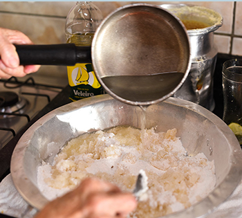
중불에서 식물성 기름과 우유, 소금을 끓이고 조금 식혀준다. 그리고 밀가루에 넣어 잘 섞어준다
-
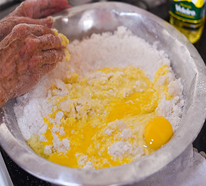
몇분후 달걀을 하나씩 깨서 섞어주고 치즈를 넣어준다
-
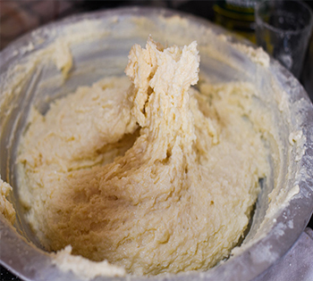
손으로 반죽을 잘 섞는다
-
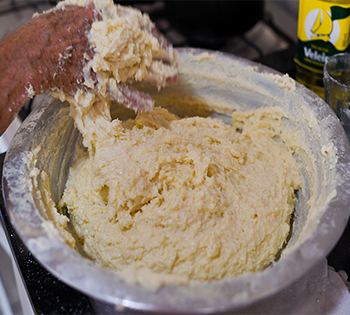
반죽이 손에 달라붙을 정도로 끈적끈적하게 유지하기 위하여 기름을 조금씩 첨가해주고 섞는다
-
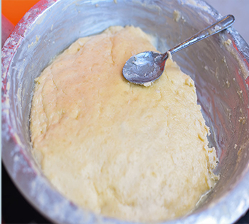
반죽에 찰기가 너무 없으면 우유를 약간 넣어도 좋다
-
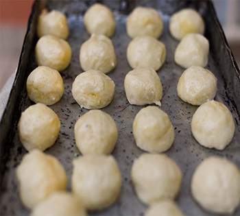
작은 볼 모양으로 빚은 뒤 오븐에서 25-30분간 굽는다
-
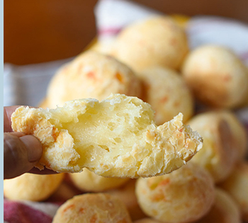
완성!
파스떼우
브라질 시장에서 쉽게 파는 곳을 발견할 수 잇는 대중적인 음식인 빠스떼우는 튀김 만두의 일종으로 남미에서 먹는 만두인 엠빠나다와 비슷한 스타일이라고 볼 수 있지만 그 유래는 일본 이민자들이 중국식 만두를 변형해 만든 것이라고 한다. 쇠고기, 닭고기, 새우 등 다양한 속재료를 넣고 만들며 초콜릿이나 구아바잼 같은 달콤한 것을 넣어서 만든 것도 있다. 브라질에서 사탕수수주스와 함께 먹지만 갓 튀겨낸 빠스떼우는 시원한 맥주와 먹어도 잘 어울린다.
Recipe
-
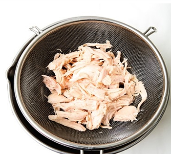
모짜렐라 슬라이스 치즈, 닭가슴살캔 2개, 춘권피 7~9장, 다진 혼합채소, 캔옥수수, 칠리소스, 올리고당, 식용유, 밀가루플을 준비한다. 닭가슴살은 체에 걸러 준다
-
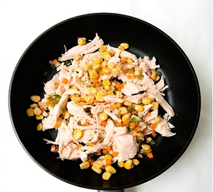
달궈진 팬에 식용유를 두른뒤 야채와 닭가슴살, 옥수수를 넣고 볶아 준다
-
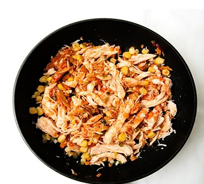
칠리소스와 올리고당을 넣어 볶는다
-
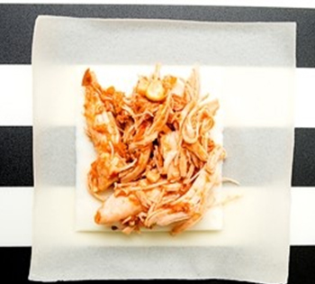
춘권피 위에 모짜렐라치즈를 올리고 볶아준 재료를 넣는
-

춘권피 가장자리에 밀가루풀을 발라 속재료가 빠져나오지 않게 감싸준다
-
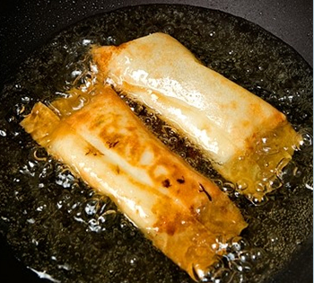
달궈진 기름에 튀긴다